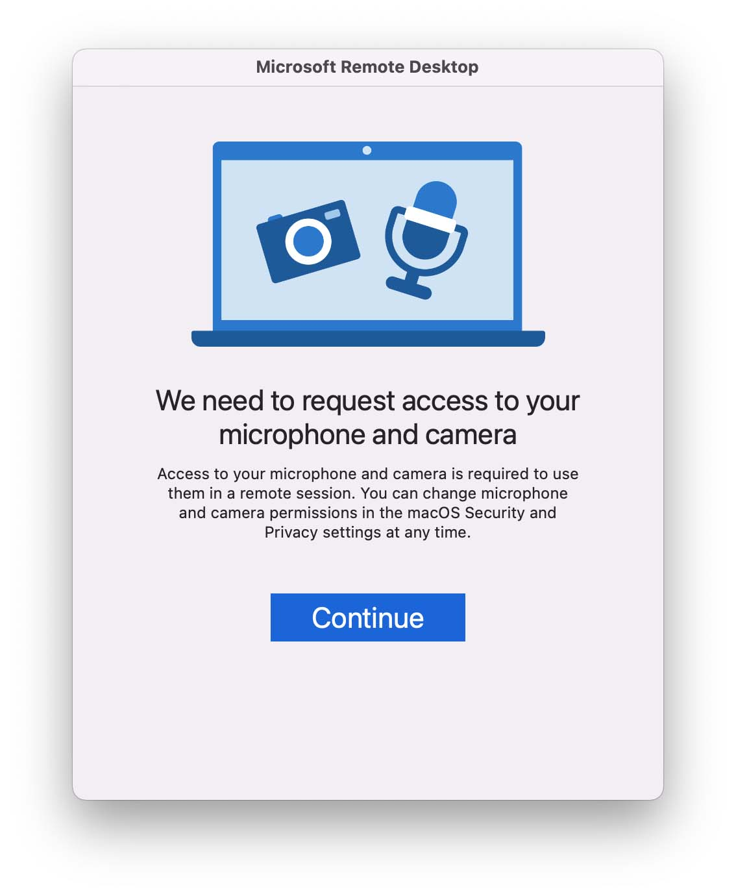
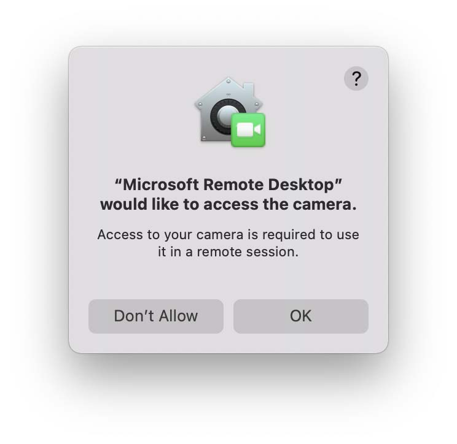
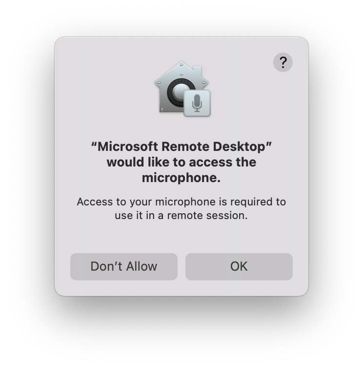
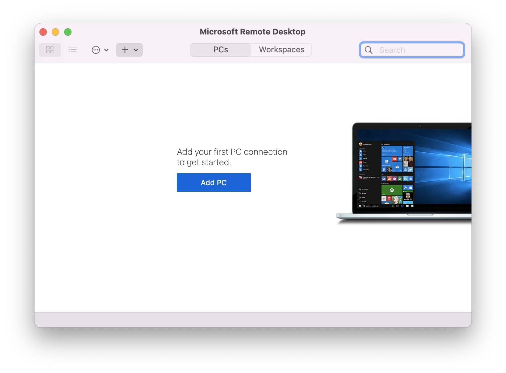
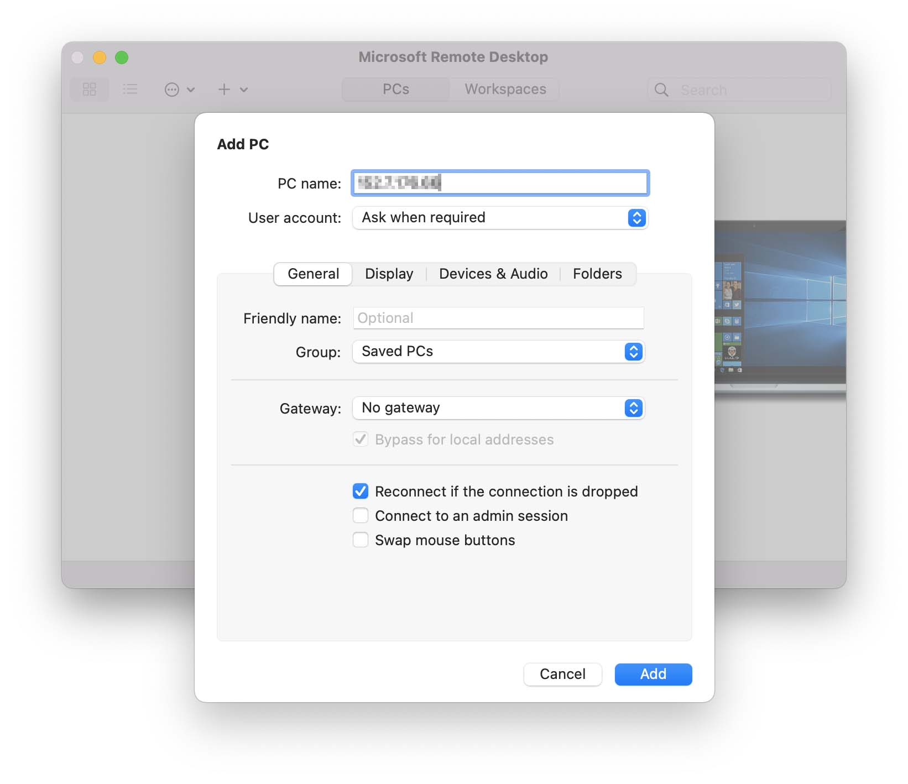
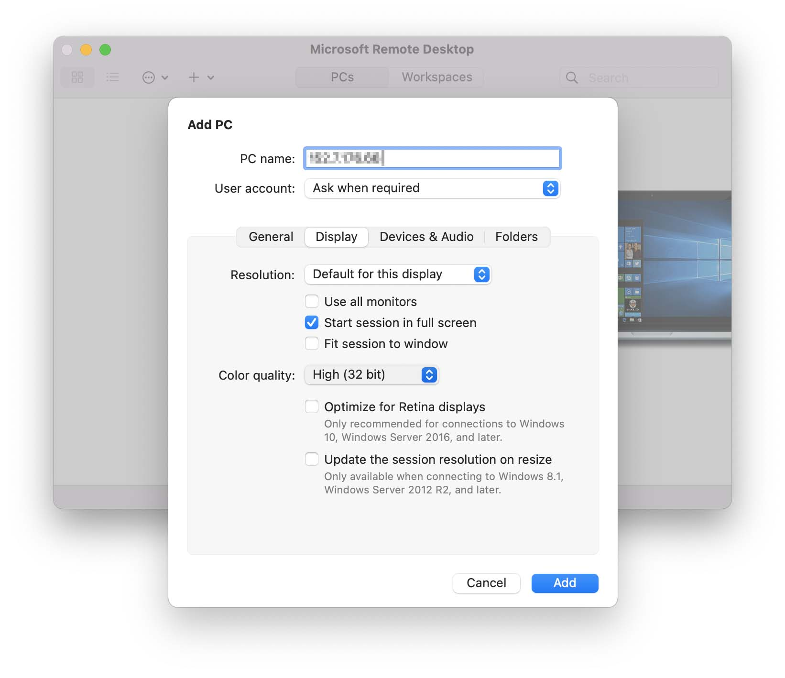
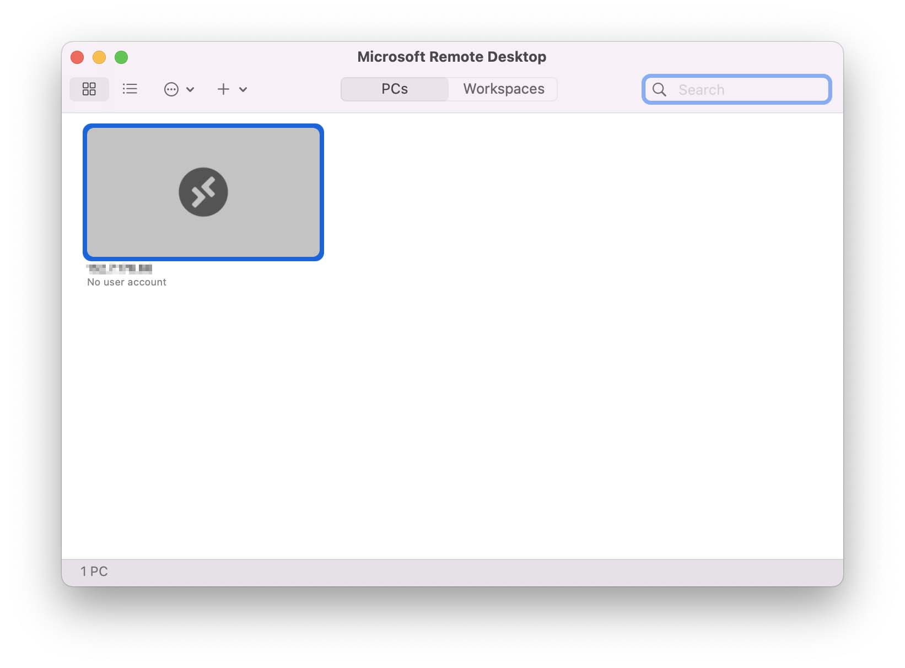
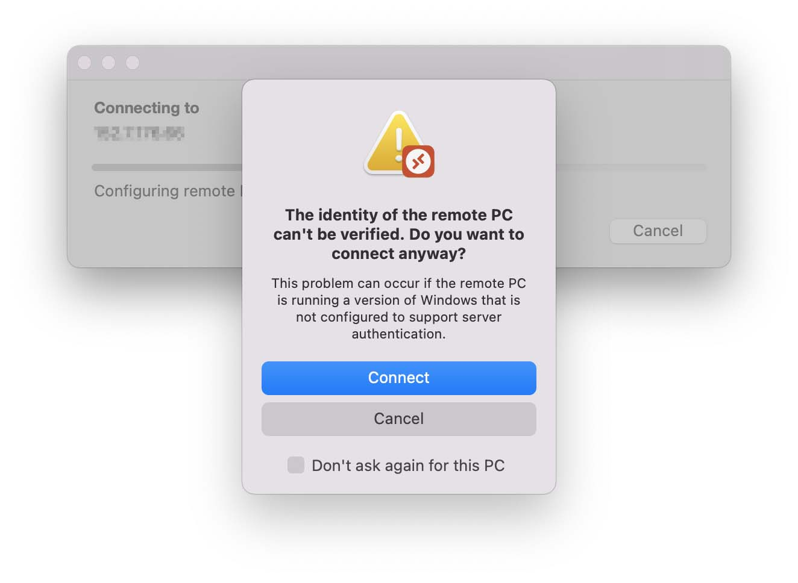
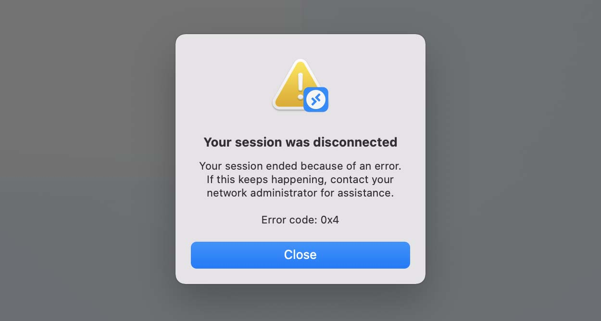

Connecting from Mac
Install Microsoft Remote Desktop
Download and install Microsoft Remote Desktop from the Mac App Store. You may need to login with your Apple ID.
Note
If you have an NC State Unity ID, you may also download this from the Self Service application.
Open Microsoft Remote Desktop
When you first open Microsoft Remote Desktop, you may see a window pop-up that says, "We need to request access to your microphone and camera." Click on Continue.

Then a window that says, "Microsoft Remote Desktop would like access to the camera." You can click on "Don't Allow."

You can also click on "Don't Allow" for a window that says, "Microsoft Remote Desktop would like to access the microphone."

Add a connection
Click either the blue "Add PC" button. Alternatively, you can click the "+" icon near the top and select "Add PC."

For PC Name, enter the Remote Computer number you wrote down earlier.

Adjust your settings
Under the Display tab, set Color quality to 32 bit.

Click Add.
Connect to the virtual reading room
Double click on the tile which has the PC Name you just added.

If prompted with, “The identity of the remote PC can’t be verified,” click Connect.

Log into the virtual reading room
Enter the username and password you wrote down earlier.
If you see a message that says, “Welcome to the first start of the panel,” select “Use default config.”
If you are asked whether you’d like to upgrade Ubuntu, select “Don’t Upgrade.”
View your materials
When you are on the Desktop, go to the VirtualReadingRoom folder. Then open the folder which has your name.

Request reproductions
If you’d like to request reproductions, copy those files into DuplicationsRequests, which is located in the folder with your name. Fill out the duplication request form we emailed you, and then email us your completed form.
End your session
Go to the top right corner of the Desktop, click on your username, and select Log Out. Then click on Log Out (do not click on Shut Down).
If you see a window that says, "Your session was disconnected," click Close.
